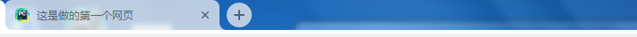
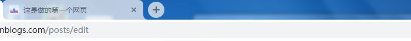

HTML解释：
HTML是英文Hyper Text Mark-up Language(超文本标记语言)的缩写，他是一种制作万维网页面标准语言（标记）。相当于定义统一的规则（W3C），大家都来遵守他，这样就可以让浏览器根据标记语言的规则去解释它。
浏览器负责将标签翻译成用户“看得懂”的格式，呈现给用户！
网页的组成：
一个网页一般由两部分组成即：
HTML负责描述网页的结构和内容（如标题，导航栏等） CSS则负责网页的表现（外观）（如背景颜色，字体样式等）。
<head>和</head>之间的内容，是元信息和网站的标题 元信息一般是不显示出来的,但是记录了你这个HTML文件的很多有用的信息
<body>和</body>之间的内容，是浏览器呈现出来的，用户看到的页面效果。也就是说这里是网页的主体。也就是body的身体之意
<html></html>是说明这个是一个网页。告诉浏览器这个网页的开始和结束。他包含了之后的两个元素。<head>和</head>|<body>和</body>
文档结构如下：
1 <!DOCTYPE html>
2 <html lang="en">
3 <head>
4 <meta charset="UTF-8">
5 <title>Title</title>
6 </head>
7 <body>
8
9 </body>
10 </html>
以下是各个内容的详细说明
一、DOCTYPE部分 ---<!DOCTYPE html>
HTML语言需要一个标准，当我们在第一行指定了<!DOCTYPE html>的时候，当浏览器去访问我们的代码的时候就就按照HTML代码里指定的标准去读取和渲染给我们展现的页面。
二、head部分
1、Meta(metadata information)
提供有关页面的元信息，例：页面编码、刷新、跳转、针对搜索引擎和更新频度的描述和关键词
1.1、定义编码格式
<meta charset="UTF-8"> #定义编码为utf-81.2、刷新和跳转页面
<meta http-equiv="refresh" content="2"> #2秒刷新
<meta http-equiv="refresh" content="1;Url=http://www.baidu.com/"/> #1秒跳转到百度首页1.3、关键字
关键字的作用：一般是让爬虫之类的收录程序，当他们在爬你的网站的时候，如果你有关键字，那么他们会优先把关键字收录到他们的记录中，比如百度：如果他们收录之后，他们搜索你的关键字的时候，就能找到百度的网站。
<meta name="keywords" content="前端,html,网页">1.4、描述
例如博客园的描述如下：
<meta name="description" content="博客园是一个面向开发者的知识分享社区。自创建以来，博客园一直致力并专注于为开发者打造一个纯净的技术交流社区，推动并帮助开发者通过互联网分享知识，从而让更多开发者从中受益。博客园的使命是帮助开发者用代码改变世界。">1.5、设置网页title信息
<title>这是做的第一个网页</title>图示：

1.6、设置网页图标Link
<link rel="icon" href="https://ss0.bdstatic.com/5aV1bjqh_Q23odCf/static/superman/img/logo/bd_logo1_31bdc765.png" type="image/x-icon"/>图示：

1.7、导入CSS类似python中导入模块类似
<link rel="stylesheet" href="css/css_model.css">1.8、style
1、在当前文件中写Css样式
2、在其他文件中写Css样式类似python的模块导入的方式把Css样式导入到当前文件中使用
1.9、script
1、在当前文件中写JS
2、在其他文件中写JS类似python的模块导入的方式把JS导入到当前文件中使用